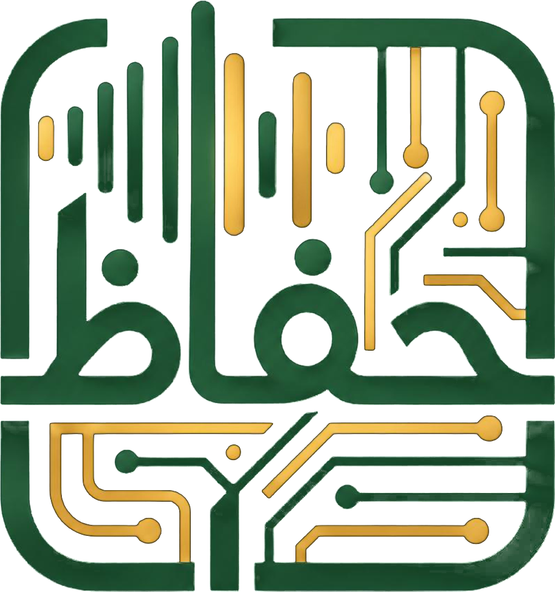

Günün ayeti yükleniyor…

Duyduğunuz ayeti saniyeler içinde bulun.
Dinleniyor…
Örnek gösterim
فَإِنَّ مَعَ الْعُسْرِ يُسْرًا
İnşirah Suresi, 5. Ayet
“Şüphesiz zorlukla birlikte kolaylık vardır.”
≈Benzer ayet: İnşirah, 6. Ayet
Örnek gösterim: Haffaz AI okunan tilaveti dinler ve İnşirah Suresi 5. ayeti bulur; benzer ayet olarak İnşirah Suresi 6. ayeti de gösterir.
Bir tilavet duydunuz, hangi ayet olduğunu merak ettiniz. Haffaz AI'a dinletin; sureyi, ayeti ve mushaftaki yerini hemen göstersin. Ücretsiz.
Mushafın her an yanında, cebinde.
Hafızlık yapanlar, Kur'an okuyanlar ve bir tilaveti dinlerken ayeti merak edenler için; geleneğin emeğini dijitalin hızıyla buluşturur.
-
Dinlet-Bul
Okunan ayeti mikrofona dinletin. Haffaz AI sureyi ve ayeti bulur, benzer (müşabih) ayetleri de yanına koyar; hafızların en çok karıştırdığı yerler tek bakışta ayrılır.
-
Namaz Vakitleri
Diyanet vakitleri ilçenize göre; vakit girdiğinde ve istediğiniz kadar önce sizi haberdar eder.
- Vaktinde ve vakitten önce bildirimHer vakit için ayrı ayrı; 5 dakikadan 60 dakikaya kadar önceden hatırlatma.
- Ana ekran ve kilit ekranı widget'larıUygulamayı açmadan sıradaki vakti ve kalan süreyi görün; aşağıda birkaçı.
- Dünyanın her yerindeTürkiye'de Diyanet vakitleri; yurt dışında bulunduğunuz şehrin vakitleri.
-
Kur'an-ı Kerim
Mushaf sayfaları, Türkçe meal, kelime kelime meal ve ayetleri kesintisiz dinleme. Bulduğunuz ayet, mushaftaki sayfasında açılır.
-
Yaz-Bul
Aradığınız ayeti ya da birkaç kelimesini Arapça veya Türkçe yazın, ayete ulaşın. Kelime kök analizi de var.
-
Kıble Pusulası
Nerede olursanız olun kıble yönünü ve Kâbe'ye uzaklığı anında görün.
-
Tilaveti Bul Yeni
Telefonda izlediğiniz bir videoda ya da dinlediğiniz bir yayında ayet mi okunuyor? Uygulamayı açmanıza gerek yok: iPhone'da Denetim Merkezi'ndeki, Android'de Hızlı Ayarlar'daki Tilaveti Bul düğmesine dokunun. Video durmadan Haffaz AI tilaveti dinlesin, ayeti bulup size bildirsin.
-
Günün Ayeti
Her gün yeni bir ayet; bildirim olarak ve ana ekran ile kilit ekranı widget'larında.
Günün Ayeti
Uygulamadaki günün ayeti burada da sizinle. Her gün yenilenir.
Sizi bölen reklam yok.
- Kendiliğinden açılan tam ekran reklam yok. Okurken, dinlerken ya da ayet ararken önünüze hiçbir şey çıkmaz.
- Sadece ekranın altında küçük, sessiz bir şerit. Mushafın, vakitlerin ve sonuçların üstünü kapatmaz.
- Videolu reklam yalnızca siz isterseniz. Ek analiz hakkı almak ya da uygulamaya destek olmak için; tercih tamamen sizin.
Haffaz AI'ı ücretsiz indirin.
iPhone, iPad ve Android cihazlar için.